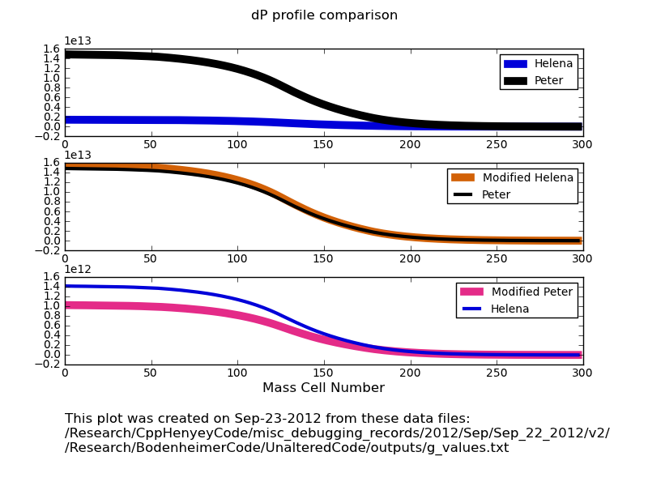
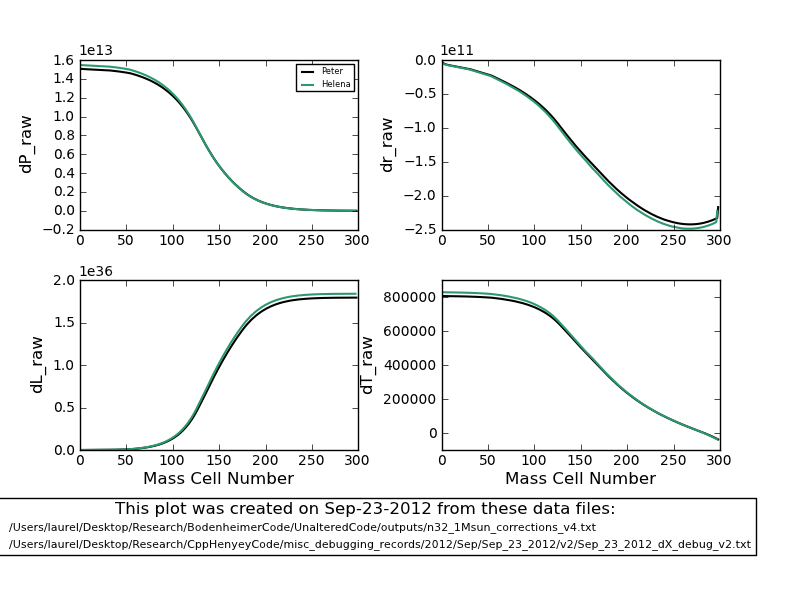
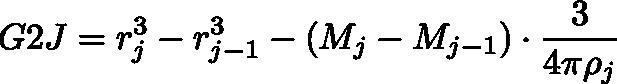
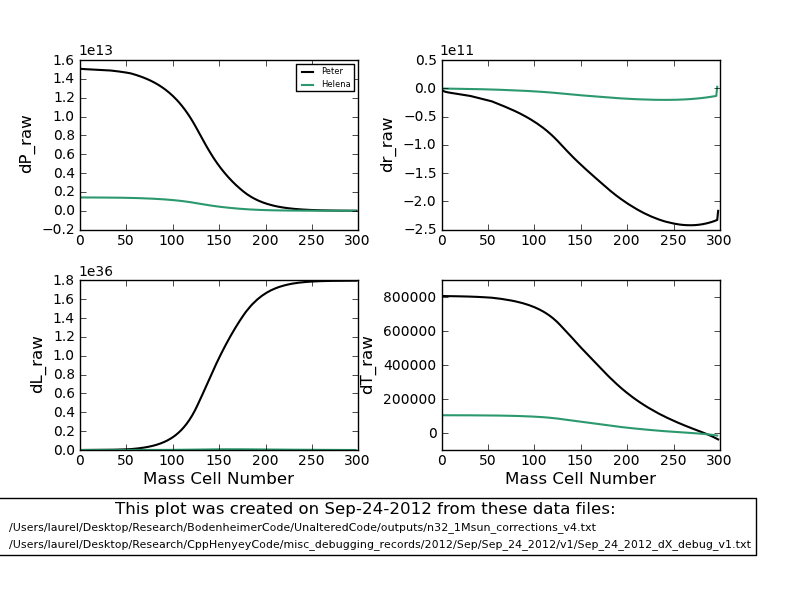
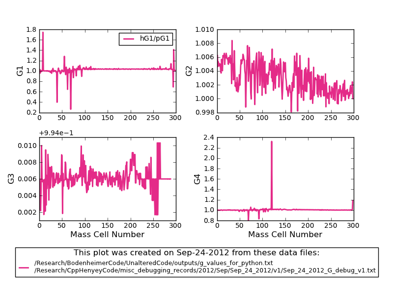
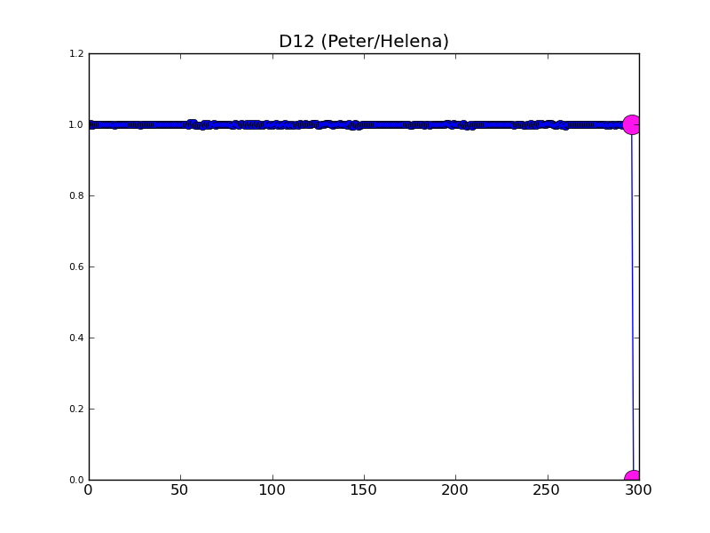

Date & Time: Sept. 24, 2012
Location: campus
Computing context: MachoMac
(/Desktop/Research/CppHenyeyCode/src, /Desktop/Research/BodenheimerCode/UnalteredCode)
From last time:
So, again: when given the PeterCDEG values, Helena can generate pretty accurate dX profiles. However, when using the CDEG values it calculates itself, Helena produces very different (much smaller) dX values (as compared to the Peter-code-generated benchmarks).
So, perhaps this is due to something involving the generation of the A profiles? Let's check this and compare the results between the two cases examined above.

The dP profiles
calculated by compare_dX_walkthrough.py from Peter and
Helena-created CDEG inputs. Here, the dP behavior before and after
setting the outermost A values to their Peter-generated counterparts
is typical of all the dX profiles' behavior.
The main feature is
shown by the top and middle panels. Doing the switcheroo outlined
above makes the two dP profiles agree much more closely.
Figure
1
Based on what Figures 1 and 2 are showing, I wonder if Helena would generate the correct dX values if I swapped in the PeterCDEG values at the outermost mass cell? Let's try this.
It does (see Figure 2), but I have to remember NOT to multiply the PeterCDEG values by -1.0 when I read them in in Helena when I do this type of switcheroo.

Figure
2
Obviously, the difference is being caused by the way the CDEG values are calculated at the outermost mass cell in Helena. So, let's look into that in more detail... again.
Of the outermost G values, it looks like G2 differs the most b/w Peter and Helena codes. G4 also differs, and G1 differs very slightly. G3 = 0 for both codes at the outermost mass cell.
Why would G2 be getting wonky at the outermost mass cell? For reference, the G2J equation is:

Equation
1
So,
need to check how the r, M, and rho values compare at the outermost
mass cell, first. (I think the j-1 values must be okay, b/c the G2J
values agree at the next-to-last mass cell)
At the outermost mass cell in Helena (j=jMax-1): Rj = 4.09457e+11 Rj-1 = 4.08921e+11 Ratm = 1.25293e+10
In the fortran code, Ratm = 16612759924.1228 (~1.6e10)
Okay, I think I may have figured out what's going on here. Next time, I need to update my GnJ.cpp subroutines to use the outer boundary conditions given in eqns. (5.47) through (5.50) in the Peter cookbook.
In addition, the Ratm values that Helena and Peter's code are generating are *close* but not *exactly* equal to each other.
To Do Today:
Check on the bolded stuff from last time
What Ratm values does Peter's code generate in the CDE calculations (when P/T/r/L values are perturbed, what Ratm values are generated?)
I think the CDE values at the outer boundary (that involve Ratm) actually aren't that off. I think it's just the outermost G2J value that's off.
Let's check
this by running Helena on all its own CDEG inputs, except for the
outermost G2J value, and see whether fixing that one thing causes
the ultimate dX profiles to change significantly. Done.
See Figure 3. The answer is: making that one change doesn't
seem to solve the problem.

Figure
3
A comparison of the G values generated from that same run: see Figure 4. It looks like the outermost G4J value might also be important? Maybe?

It looks like G4 is the
only other profiles that differs significantly b/w codes at the
outermost mass cell.
Figure
4:
Also,
examine the CDE ratio profiles for the v1 run, to see if any of
those values differ significantly at the outermost mass cell.
Done.
The D12 profile differs at the outermost point (See Figure 5)
The E41 and E44 values are also slightly off at the outermost mass cell, but nothing so drastic as D12. (As it superficially appears to me right now, anyway.)

Figure
5
Maybe
also do that dX walk-through analysis of the v1 run.
The outermost A2, A3, and A4 values are still off.
Used the dX walk-through analysis to see what effect setting the outermost CDEG Helena values to Peter values had.
The largest change due to something in row 4, column 3 of the outermost D matrix
Oddly, the values in question are something like 1e-40 in Helena, and 0.0 in Peter. Changing just that one very small value actually makes a huge difference (I think this has to do with how the D matrix values end up effecting the InverseS matrix values... through the mysteries of matrix inversion).
What happens if I enforce matrix value "cleaning" in the dX walkthrough program?
Try running Peter's unaltered dataset thru it
Also run a "cleaned" version of Peter's dataset through
Plot/compare the two.
Also, see if Peter's D43 value is set to zero due to those switches in his GI subroutine code, or if the full calculations really yield D43 = 0.0 at the outermost mass cell.
To test whether the outermost G4J mismatch is causing any of these problems, re-run Helena with both the outermost G2J and G4J values set to Peter values.
To keep in mind for later:
Were the Peter values I've been using in my debugging generated from the NO fusion version of the fortran code??? Definitely need to check this.
For the 1 Mjup model: do the Peter and Helena models' dX values (raw) now agree, too?